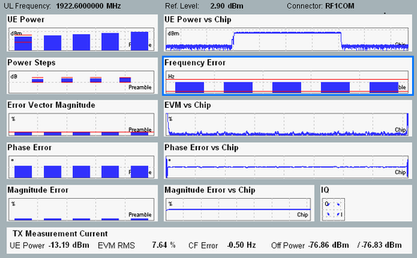

The results of the WCDMA PRACH measurement are displayed in several different views.
For detailed description, see "Measurement Results".
The PRACH measurement provides an overview dialog and a detailed view for each diagram in the overview. The overview dialog shows the modulation and power results as traces or bar graphs. A selection of single value results is also shown.

The results can be retrieved via the following remote commands.
Remote command:The results can be retrieved via the following remote commands.
Remote command: